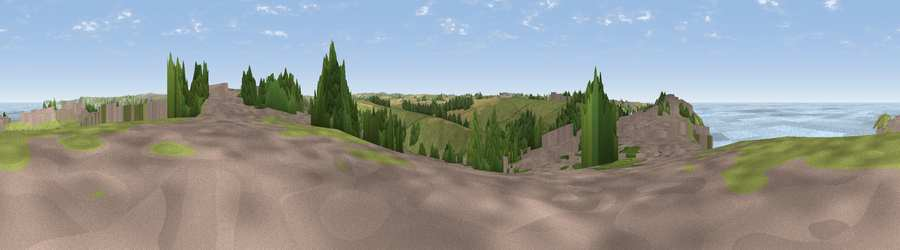

Viewpoint near Newquay
#13644 in England · top 31% of its area beats it · near NewquayThe view, rendered

A 360° render of this exact spot computed from the terrain model, tree cover and land cover — summer colours, afternoon light, calibrated against photographs of famous viewpoints. Real trees, hedges and buildings will differ in detail.
The panorama
Grey silhouette: terrain skyline in each direction (720 bearings, Earth curvature and refraction included). Dashed green: skyline with trees (+15 m) and buildings (+8 m) as obstacles. Blue strip: how far the ground is visible on each bearing.
Where the view opens
Wedge length = distance to the farthest visible ground on that bearing (vegetation-aware). Rings at 10, 25 and 50 km.
What fills the view
39% grassland · 22% water · 17% built-up · 12% woodland · 6% cropland · 2% bare ground ·
Angular shares of the visible panorama (visual magnitude), not map area. Landscape diversity 0.67 (0–1 Shannon).
Key numbers
More beautiful places nearby
The staircase of upgrades: each row has a higher view potential than everything closer. Driving times are estimates from straight-line distance, calibrated against real road routing — check an actual route before setting out.
| Place | Direction | Drive | Score |
|---|---|---|---|
| Viewpoint near Crantock | W · 1 km | ~3 min | 59.3 |
| Viewpoint near Crantock | W · 2 km | ~4 min | 60.4 |
| Viewpoint near Holywell | WSW · 4 km | ~8 min | 67.2 |
| Viewpoint near Holywell | SW · 5 km | ~12 min | 71.1 |
| Viewpoint near Trenance | NNE · 8 km | ~17 min | 71.2 |
| Viewpoint near Perrancoombe | SW · 10 km | ~19 min | 71.3 |
| Viewpoint near St Eval | ENE · 12 km | ~22 min | 78.3 |
| Penhale Hill | ESE · 12 km | ~23 min | 80.3 |
50.41190, -5.09607 · source: screening · position refined by local search. Computed location — check access rights before visiting.